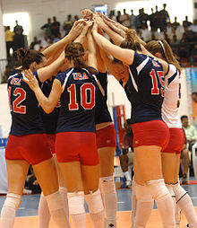

Les points sont marqués soit en faisant tomber le ballon sur le terrain de l'équipe adverse, soit quand l'adversaire commet une faute. La première équipe à atteindre 25 points (avec 2 points d'écart minimum) gagne le set et la première équipe qui gagne trois sets gagne le match. Dans le cas d'un score à 2 sets partout, les équipes jouent un 5e set décisif. La première équipe ayant marqué 15 points (avec 2 points d'écart minimum) remporte le 5e set et le match. Chaque équipe peut toucher le ballon jusqu'à trois fois (en plus d'un éventuel contre) avant que le ballon ne retraverse le filet, et les contacts consécutifs doivent être faits par des joueurs différents. Le ballon est d'habitude joué avec les mains, bras ou les poings mais les joueurs ont le droit de toucher le ballon avec n'importe quelle autre partie du corps (y compris les pieds).
Une équipe de volley-ball se compose de six joueurs sur le terrain : trois avants et trois arrières. La position des joueurs est généralement désignée par un numéro de 1 à 6 : 1 étant le joueur arrière droit (défenseur droit ou serveur) qu'on peut également appeler réceptionneur (défenseur), 2 l'avant droit (attaquant), 3 l'avant centre (attaquant central), 4 l'avant gauche (attaquant), 5 l'arrière gauche (défenseur gauche), et 6 l'arrière centre (défenseur central).Cette numérotation correspond à l'ordre de service lors du début de set. Le poste 1 est occupé par le premier joueur à servir. Le poste 2 correspond au joueur qui servira en deuxième, et ainsi de suite. Chaque joueur est tenu d'être à sa position lors de la mise en jeu de la balle. En revanche, dès la balle mise en jeu, les joueurs sont libres de se déplacer sur le terrain à leur guise, mais les joueurs arrières ne peuvent attaquer qu'en dehors des trois mètres et ne peuvent contrer ; en fait, dès qu'ils sont dans la zone d'attaque, ils ne peuvent pas renvoyer une balle de l'autre côté si le contact a lieu avec la balle entièrement au-dessus du filet. Les joueurs de l'équipe qui récupèrent le service font une rotation dans le sens des aiguilles d'une montre. Le joueur P2 devient P1, etc.
Les phases de jeu sont les suivantes :
L'échange continue jusqu'à ce qu'une des deux équipes commette une faute. Les fautes les plus courantes sont les suivantes :